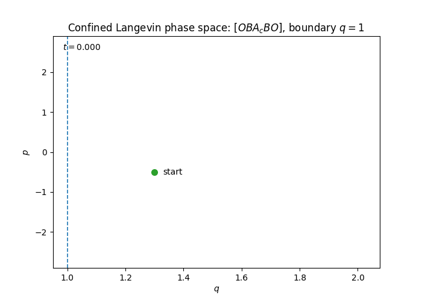

Numerical Integrators for Confined Langevin Dynamics
Langevin dynamics is a standard tool for sampling, molecular simulation, and designing optimization methods. The situation becomes subtler when the position is restricted to a domain. The numerical method must not only approximate an SDE, but must also take into account the interaction with the boundary. In the kinetic setting this interaction is an elastic collision, and that changes both the algorithm and its convergence analysis.
Overview. The goal is not simply to keep particles inside the domain which can already be achieved in several ways. The challenge is to do so while faithfully capturing the underlying collision dynamics. We therefore ask whether it is possible to design numerical schemes in which specular reflections are an intrinsic part of the time-stepping procedure, rather than being enforced through projection, penalty methods, rejection, or Metropolis adjustments. Doing so requires handling multi-collision events, where several boundary reflections may occur within a single numerical step. Despite this, the resulting symmetric splitting schemes display an unexpected second-order weak convergence.
BackgroundFrom reflected overdamped dynamics to kinetic Langevin with specular reflection
For reflected overdamped Langevin dynamics, the state is the position alone. A boundary local time keeps the process in $\bar G$ by pushing it in the inward normal direction $\nu$:
Reflected overdamped Langevin dynamics and, in general, reflected diffusions have a long numerical history. The following list is not exhaustive, but it gives a useful picture of the kinds of boundary treatments that have been developed.
| Work / method | Main numerical idea |
|---|---|
| Walk-on-sphere | Monte Carlo method for the Neumann problem, based on simulating exits from balls inside the domain. |
| Walk-on-hypercube | Milstein-type random walk construction using local coordinate boxes / hypercubes near the boundary. |
| Projection methods | Euler-type methods where a tentative point outside the domain is projected back to \(\overline{G}\). |
| Penalty / barrier methods | Approximate reflection by adding a strong inward penalization or barrier force near \(\partial G\). |
| Milstein: change of coordinates | Boundary-adapted coordinates are used to construct numerical schemes for boundary-value problems. |
| Lépingle procedure | Euler procedure for reflected SDEs, with an exact construction in the half-space setting. |
| Gobet's half-space Euler | Local half-space approximation for simulating diffusions in a domain and analyzing weak errors near the boundary. |
| Symmetrized reflection | Symmetrized Euler methods for efficient weak approximation of reflected diffusions. |
This list is intentionally selective rather than exhaustive. The important contrast is that reflected overdamped dynamics has a mature numerical theory, whereas confined kinetic Langevin dynamics has received much less attention.
In the kinetic or underdamped model, both position $Q_t$ and momentum $P_t$ evolve. The boundary does not push the position through local time. Instead, it produces an instantaneous impulse in momentum:
The reflection term is a jump process in momentum. If the particle hits the boundary at time \(s\), then only the normal component of the incoming momentum is reversed:
Here \(P_s^-\) denotes the momentum just before the collision and \(n_G(Q_s)\) is the outward unit normal at the boundary point \(Q_s\). In other words, the particle undergoes specular, or elastic, reflection at \(\partial G\): the tangential component of momentum is unchanged, while the normal component changes sign.
The invariant density is
ConstructionSplitting the dynamics into solvable pieces
We separate the dynamics into three elementary flows. The notation emphasizes that the free-transport part already includes collisions:
- $A_c$ — collisional drift: $\dot Q=P$, with exact straight-line transport and elastic reflection whenever the path reaches $\partial G$.
- $B$ — deterministic impulse: $\dot P=-\nabla U(Q)$.
- $O$ — Ornstein–Uhlenbeck step: $dP=-\gamma P\,dt+\sqrt{2\gamma/\beta}\,dW_t$, which can be sampled exactly.
For example, the symmetric $[OBA_cBO]$ composition is
Phase-space view of the \(OBA_cBO\) step
The animation below shows a one-dimensional confined Langevin trajectory in phase space. The horizontal axis is position \(q\), and the vertical axis is momentum \(p\). The particle evolves in the domain \(G=(1,\infty)\), with a specular reflection at \(q=1\).

The endpoint force can be reused at the next step, so after initialization the method requires one new gradient evaluation per time step. We also study other symmetric arrangements, including $[BA_cOA_cB]$ and $[OA_cBA_cO]$, and compare their numerical performance.
First-order schemes
Momentum-first $[PA_c]$ and collision-first $[A_cP]$ Euler-type methods incorporate specular reflection directly and attain weak order one under suitable assumptions, both over finite intervals and for ergodic averages.
Symmetric splittings
Compositions of $A_c$, $B$, and $O$ display second-order weak convergence. The result is surprising because setting noise and damping to zero reduces $[OBA_cBO]$ to collisional Störmer–Verlet, which is normally only first order at collisions.
Boundary geometryThe $A_c$ step and the multi-collision problem
If no collision occurs during a duration $h$, the $A_c$ flow is simply $A_c(q,p;h)=(q+hp,p)$. If the line first reaches the boundary at time $\tau$, then
On a curved boundary, this reflected segment may hit the wall again before the step ends. Multi-collisions are especially associated with large speeds or nearly grazing incidence, when $p\cdot n_G(Q_c)$ is small. The correct $A_c$ implementation is therefore recursive: detect a collision, reflect, reduce the remaining time, and continue until the full interval $h$ has been exhausted.
Let $\kappa=\kappa(q,p,h)$ be the number of collisions in the step, $Q_{c,i}$ the collision points, $\widetilde P_i$ the post-collision momenta, and $\vartheta_\kappa=\tau_1+\cdots+\tau_\kappa$. Then
Why simply counting collisions is the wrong quantity
A deterministic upper bound on $\kappa$ is difficult and, for the convergence proof, unnecessarily strong. The boundary part of the one-step error naturally contains a weighted sum of incoming normal velocities, schematically
Our analysis controls this accumulated incidence contribution through a Lyapunov-type argument rather than controlling the raw number of impacts. In finite time, the corresponding expectation remains bounded independently of the step size. Informally, the expected number of time steps containing collisions does not grow as $h\to0$. This is a key reason why the collision contribution can be summed without destroying first-order weak convergence.
Practical interpretation. A multi-collision step is handled by repeated exact billiard reflections. The theory then measures how strongly the trajectory meets the boundary, not merely how many times the recursive loop runs.
Main phenomenonWhy second order is unexpected
To isolate the issue, consider one-dimensional deterministic Hamiltonian dynamics on $G=(0,\infty)$, with Hamiltonian $H(q,p)=\tfrac12p^2+U(q)$ and one collision at time $\tau\in(0,h)$. The exact collisional flow has the expansion
The collisional Störmer–Verlet update $[BA_cB]$ instead gives
The leading discrepancy is proportional to $2\tau-h$. A generic deterministic collision is not centered in the time step, so the collisional method loses an order. The same mechanism is visible directly in the numerical energy:
At the midpoint, $\tau=h/2$, every displayed order-losing term vanishes.
Stochastic averagingThe collision time is centered in expectation
The stochastic splitting does not force every collision to occur at the midpoint. Instead, noise randomizes the pre-collision state and hence the location of the collision within the $A_c$ substep. The relevant cancellation is statistical:
Consequently, terms proportional to $\tau-h/2$ cancel after averaging to the accuracy required for a local weak error of order $O(h^3)$, which produces a global weak error of order $O(h^2)$. In the half-space analysis for $[OBA_cBO]$, this cancellation is made precise under smoothness and density assumptions. Numerical experiments show the same second-order behaviour for several symmetric compositions and for curved domains.
| Method | Without collision | With collision |
|---|---|---|
| Störmer–Verlet / $[BA_cB]$ | $O(h^2)$ | $O(h)$ for fixed deterministic initial data |
| $[OBA_cBO]$ | $O(h^2)$ weakly | $O(h^2)$ weakly |
The same observation suggests a related deterministic experiment: if the initial condition of a collisional Hamiltonian system is randomized, then the collision time also varies across the ensemble. Numerically, the ensemble-averaged energy error of collisional Störmer–Verlet recovers second-order behaviour. This points to a broader role for randomization in geometric integration with impacts.
ContributionsWhat this paper adds
- First-order weak integrators for general confined Langevin SDEs, with error analysis at finite time and for ergodic limits.
- A recursive $A_c$ construction that treats elastic multi-collisions as part of the numerical flow.
- A Lyapunov-based estimate for the accumulated boundary-incidence contribution, avoiding an explicit deterministic bound on the number of collisions.
- Symmetric splitting schemes for confined Langevin sampling, including a method requiring one new force evaluation per step after reuse.
- An explanation of the counterintuitive second-order weak behaviour through midpoint centering of collision times.
- Numerical comparisons on model problems and constrained sampling examples, supporting the theory and illustrating the performance of different splittings.
The broader conclusion is that specular reflection need not be treated as an order-destroying correction appended to a standard Langevin method. When the collision flow is incorporated geometrically and the splitting is chosen carefully, one can retain both the physical boundary mechanism and high weak accuracy.